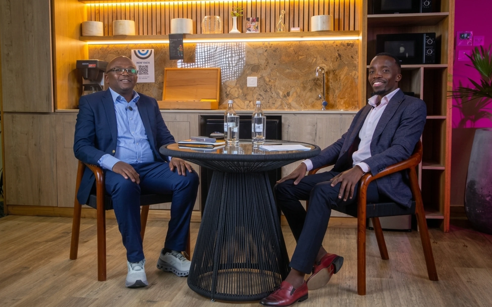

Ideas, people & the bigger picture
Questions that matter.
Curious conversations about the forces shaping how we live, work, believe and belong.
Where curiosity becomes a conversation.
THE IDEA
Beyond the headline.
Money, work and what wealth really means.

A FEW WAYS IN
Follow your curiosity.
Explore the themes behind the conversations, then continue to the video and podcast archive.
-
01 / MONEY & WEALTH Money & Wealth Work, wealth and the choices behind both. Explore this theme
-
02 / POLITICS & POWER Politics & Power Leadership, accountability and who gets heard. Explore this theme
-
03 / RELATIONSHIPS & LIFE Relationships & Life Family, connection and the experiences that shape us. Explore this theme
-
04 / SOCIETY & JUSTICE Society & Justice Institutions, inequality and the questions affecting public life. Explore this theme
-
05 / TECHNOLOGY & INNOVATION Technology & Innovation Digital media, engineering and the tools that shape how we communicate. Explore this theme
-
06 / CULTURE & IDENTITY Culture & Identity Music, media and the cultural experiences that shape identity. Explore this theme
CONTINUE THE CONVERSATION
The next listen
is yours.
Find a subject that stays with you, then continue with the full conversation on YouTube or Spotify.
Explore conversationsABOUT THE PLATFORM
One question
can lead anywhere.
From business and money to public life, relationships and personal experience, Dr. King’ori’s conversations follow the questions shaping everyday life.
This platform brings those conversations into one place. Explore by guest or subject, find a fresh perspective, then continue with the full episode on its original platform.
Explore the conversation archiveSTART A CONVERSATION